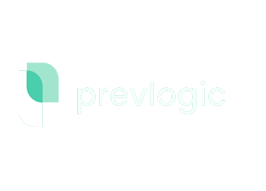
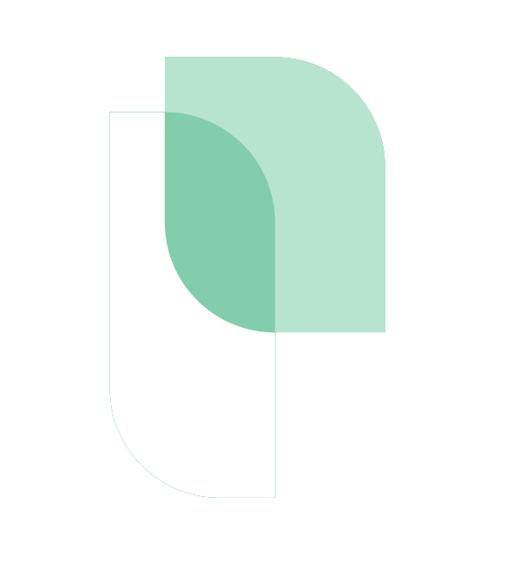
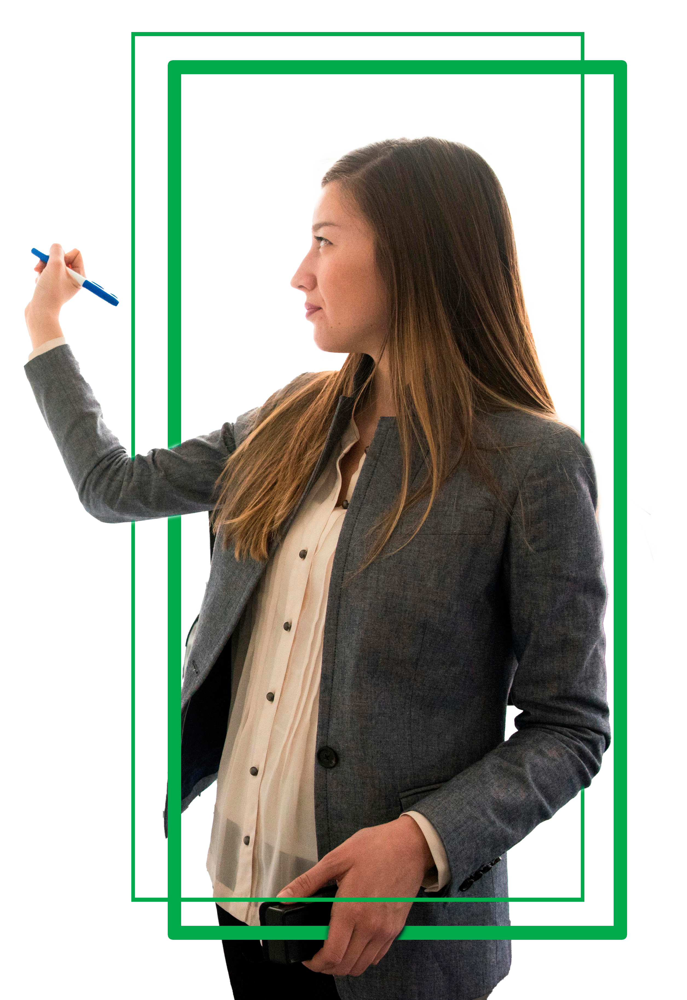

Seu dia a dia, conectado
Governança e Processos Internos
Políticas Internas e Documentos
Procedimentos, benefícios, viagens, segurança da informação, LGPD e outros.
Comitês e Governança
Pautas, atas e cronogramas dos comitês da Prevlogic.
Gestão de Contratos
Repositório com controle de vigência, status de renovação e anexos.
Calendário Corporativo
Propostas Comerciais
Projetos, Tarefas e Operações
Conhecimento e Comunicação
NOTÍCIAS E COMUNICADOS
Mural digital com publicações oficiais da diretoria e avisos operacionais.
Saiba mais →CANAL DE IDEIAS
Canal para desenvolvimento de novas propostas e melhorias para a empresa.
Saiba mais →CATÁLOGO DE SISTEMAS
Links para Smartprev, Autoprev e outros sistemas.
Saiba mais →BUSCA UNIFICADA
Pesquise em documentos, e-mails e páginas na intranet com o Copilot.
Saiba mais →Central de Conhecimento PrevLogic
Artigos técnicos, tutoriais e manuais de sistemas: Smartprev, Autoprev e outros.
Saiba mais →